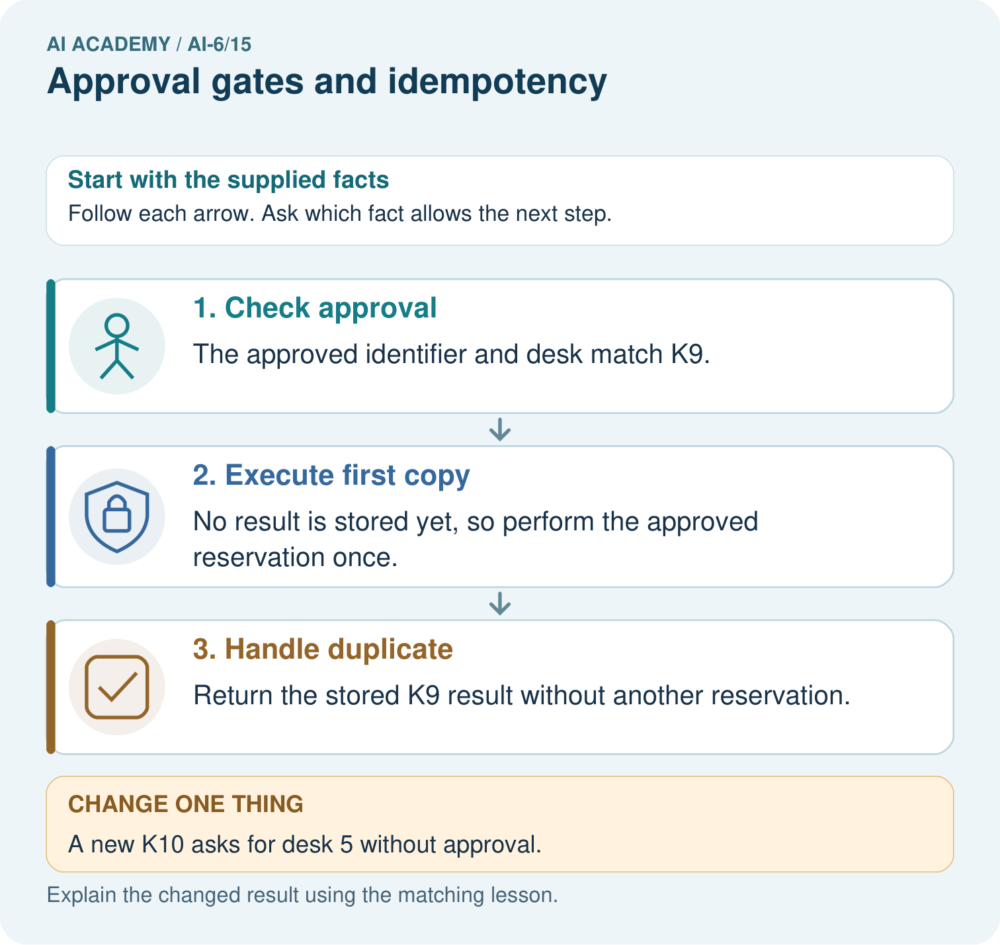

AI Academy · Level 6 · Grade 11 · Week 15 · Student lesson
Approval gates and idempotency
Learn to understand, design, build, test and explain AI systems responsibly.
Project: Grounded Learning Service
Before you start
Recall Planning and action selection. Explain why a recorded result needs its input conditions and evidence source before it can support a claim.
Plan time to read, investigate and explain. Keep predictions separate from observations.
Student lesson · 1 of 14
Your mission
Your learning target
I can explain the mechanism and terminology of approval gates and idempotency.
I can apply the stated procedure to a new case with a traceable result.
I can identify an assumption or limitation and design a revealing follow-up.
Remember before reading
Close your notes first. A rough first answer helps us choose the right starting point; it is not a score for your ability.
Without opening the old lesson, explain one key idea from Planning and action selection. Give an example and a mistake that the idea helps you avoid.
Without opening the old lesson, explain one key idea from Logs traces and privacy. Give an example and a mistake that the idea helps you avoid.
Without opening the old lesson, explain one key idea from Integration tests and fixtures. Give an example and a mistake that the idea helps you avoid.
After trying, check the relevant lesson or ask your teacher. Change the part of your explanation that the evidence shows was wrong.
This week you will practise:
Explain the mechanism and terminology of approval gates and idempotency
Apply the stated procedure to a new case with a traceable result
Identify an assumption or limitation and design a revealing follow-up
Retrieve what you already know
Recall Planning and action selection. Explain why a recorded result needs its input conditions and evidence source before it can support a claim.
This week’s end goal
Explain approval gates and idempotency using the deciding step in this fictional service.
Student lesson · 2 of 14
Notice the evidence
Approval gates bind side effects to an actor, exact version and destination. Idempotency prevents repeated requests with the same key from repeating a committed effect.
Begin by writing the question the procedure is intended to answer. Identify the information already supplied, the information it will produce and the information still missing. These are constructed classroom examples; they do not require live accounts, private records or an external service. Do not treat a plausible explanation as a measured outcome.
Student lesson · 3 of 14
See how it works
The mock submission requires approval for request version v1 and destination D. Store key -> committed result. Reusing the same key with the same payload returns that result; the same key with different payload is rejected.
Approval gates and idempotency — evidence trace
Before applying the procedure, write its units, denominator or decision boundary where relevant. A partner should be able to repeat each step using the same inputs. If a required input is absent or violates the stated contract, record that condition explicitly instead of quietly replacing it with a convenient value.
Connect the picture and the explanation
Point to the input, the deciding step and the result in this week’s visual. Explain the same step in ordinary words. A picture helps when you can say what each part represents.
Student lesson · 4 of 14
Compare the cases
Compare a familiar case with a changed case
Approved send v1 to D uses key K, commits once, then caller retries K with the identical payload. Show the intermediate steps and give the conclusion with its scope.
Change one thing in the pictured case
Change: A new K10 asks for desk 5 without approval.
Prediction: Stop K10 at the approval gate.
Reason: K9’s approval does not apply to a different action.
Student lesson · 5 of 14
Words that unlock the idea
| Word | Meaning |
|---|---|
| Idempotency key | An identifier for deduplicating one logical operation |
| Approval gate | A required permission check before a side effect |
| Payload conflict | Different operation content under the same key |
Student lesson · 6 of 14
Follow a worked example
Approved send v1 to D uses key K, commits once, then caller retries K with the identical payload.
Return the stored committed result; one effect total. A timeout alone is not evidence the first effect failed.
Compare the intermediate evidence with the final statement. Explain why each number or decision follows from the stated inputs. The conclusion belongs to this scenario and procedure; changing the inputs, evaluation population or authority can change what it establishes. Retain the raw record so a later revision can be compared honestly.
Optional local lab: predict the printed result before running this standalone Python 3 example. Change one relevant boundary input, record the outcome and state the contract or statistical assumptions. The program uses fictional values and the Python standard library; it performs no external operations.
from copy import deepcopy
class MockLedger:
"""In-memory classroom deduplication, not durable exactly-once delivery."""
def __init__(self):
self.committed = {}
self.effects = []
def submit(self, key, payload, approval):
if approval != payload:
raise PermissionError('exact approval required')
if key in self.committed:
(original, result) = self.committed[key]
if original != payload:
raise ValueError('idempotency conflict')
return deepcopy(result)
result = {'operation_id': key, 'status': 'committed'}
self.effects.append(deepcopy(payload))
self.committed[key] = (deepcopy(payload), deepcopy(result))
return deepcopy(result)
ledger = MockLedger()
payload = {"version": "v1", "destination": "D"}
ledger.submit("K", payload, payload)
ledger.submit("K", payload, payload)
print(len(ledger.effects))Learn from the worked case
Cover the result before checking it. Say what is given, choose the procedure, and follow one step at a time. Then uncover the result and explain your first mismatch. Ask why a step is allowed, not only what number it produces.
A pictorial worked case: Approval gates and idempotency
One approval, one reservation. A desk tool needs approval for the exact request and deduplicates repeated request keys.
The facts we will use
K9 reserves desk 4 and is approved once. Two copies of K9 arrive.

Read the picture one step at a time
Why this result follows
Approval answers whether an action may proceed. Idempotency prevents repeated handling of that action from creating duplicate effects.
What this example does not establish
Deduplication requires reliable stored keys; this illustration does not prove crash-safe exactly-once execution.
Student lesson · 7 of 14
Find and repair a mistake
A key prevents duplicate application effects only within the implemented persistence and downstream guarantees; it is not universal exactly-once delivery.
A useful check asks what would make the reasoning fail. Distinguish a failure to execute the declared procedure from a weakness in the procedure itself. The first may require a correction; the second requires an explicitly revised method and new evidence. Preserve unsuccessful cases so an improved result cannot hide the original problem.
Locate the earliest unsupported step
A report omits this qualification: A key prevents duplicate application effects only within the implemented persistence and downstream guarantees; it is not universal exactly-once delivery. Explain how omitting it could change a reader's interpretation, and write an accurate replacement.
Student lesson · 8 of 14
Practise together
Explain the weekly mechanism in your own words. Use the worked scenario to name its input, decision rule and output.
Practise with less help: Trace the worked case
Use workbook W2 for the connected example “Approval gates and idempotency”. First fill the input and rule boxes. Try the middle steps before asking for a hint. After a hint, try the next step yourself.
| Plan | Do | Check |
|---|---|---|
| What is given? Which rule or procedure applies? | Record each intermediate step. | Does the result follow? What remains unknown? |
Explain your trace to a partner. Your partner points to one step to check. Swap roles on the next case. Each person writes their own explanation.
Check your reasoning
Use the worked case for Approval gates and idempotency. Proposed explanation: “The worked result establishes every future case”. Decide whether this explanation is supported. Point to the step or supplied fact that decides; explain your repair if needed.
Answer on your own before discussion. If you are unsure, say which step you need help with.
Explain the picture
Trace the two deliveries of approved K9. How many reservations should occur, and why can a new K10 for desk 5 not borrow K9’s approval?
This is supported practice. Keep the separately named independent case for an attempt before feedback.
Student lesson · 9 of 14
Run the investigation
Predict, investigate and preserve the evidence
Approved send v1 to D uses key K, commits once, then caller retries K with the identical payload. Show the intermediate steps and give the conclusion with its scope.
from copy import deepcopy
class MockLedger:
"""In-memory classroom deduplication, not durable exactly-once delivery."""
def __init__(self):
self.committed = {}
self.effects = []
def submit(self, key, payload, approval):
if approval != payload:
raise PermissionError('exact approval required')
if key in self.committed:
(original, result) = self.committed[key]
if original != payload:
raise ValueError('idempotency conflict')
return deepcopy(result)
result = {'operation_id': key, 'status': 'committed'}
self.effects.append(deepcopy(payload))
self.committed[key] = (deepcopy(payload), deepcopy(result))
return deepcopy(result)
ledger = MockLedger()
payload = {"version": "v1", "destination": "D"}
ledger.submit("K", payload, payload)
ledger.submit("K", payload, payload)
print(len(ledger.effects))| Record | Your evidence |
|---|---|
| Given input and fixed rule | |
| Prediction before checking | |
| Actual result, or “not run” | |
| First mismatch and one explanation | |
| Boundary or missing input and expected response |
On paper, trace the supplied procedure. If code is provided, predict before running it in a local practice file. Never write an expected answer as though it were an observed run.
Plan → try → check
Before trying: what do I expect, and why? While trying: which step could first go wrong? Afterwards: what did I actually observe, and what should change? Keep “not run” if you only traced the procedure.
Student lesson · 10 of 14
Build your understanding
Explain → apply → challenge
Explain the weekly mechanism in your own words. Use the worked scenario to name its input, decision rule and output.
A report omits this qualification: A key prevents duplicate application effects only within the implemented persistence and downstream guarantees; it is not universal exactly-once delivery. Explain how omitting it could change a reader's interpretation, and write an accurate replacement.
For the worked scenario, propose one additional case that could reveal a failure, describe its expected outcome before running it, and explain what would need to remain fixed for a fair comparison. Do not reuse W4 as a new final test after receiving feedback.
Student lesson · 11 of 14
Connect your project
Add a labelled approval gates and idempotency evidence sheet to Grounded Learning Service. Show how you can explain the mechanism and terminology of approval gates and idempotency. Use the supplied fictional case and keep its inputs, intermediate steps, calculation or prediction, and limitation. Connect this record to last week’s record; a matching answer without a trace is insufficient.
| Project evidence | Record |
|---|---|
| Component and version | |
| Inputs permitted at prediction time | |
| Trace and comparison with earlier work | |
| Failure, limit and human review |
Evidence for your project
For the Grounded Learning Service, retain an annotated trace and the changed-case result. Name the contract or evidence that makes the deciding step valid, so another team can review it.
Student lesson · 12 of 14
Show what you know
Complete the supported workbook tasks before attempting W4 independently. Record any hints or help used. After feedback, use the teacher's fresh retry rather than copying the earlier answer. For a project, select a relevant new case, predict the outcome from the declared rule and preserve the result alongside any revision.
For the worked scenario, propose one additional case that could reveal a failure, describe its expected outcome before running it, and explain what would need to remain fixed for a fair comparison. Do not reuse W4 as a new final test after receiving feedback.
Student lesson · 13 of 14
Study a complete case
Complete evidence record
Approval gates and idempotency — evidence trace
Follow the input through the stated procedure to its result. Cover the result first, predict it, then explain every intermediate step. The text/table accompanies the figure so the example can be read without colour.
Student lesson · 14 of 14
Try a new case independently
Independent case: Apply a new case independently
Key J already committed room A. A retry uses key J but room B. What should happen?
Attempt this case before feedback. Record any help. Earlier examples below are further practice; a case already practised with feedback cannot establish fresh transfer.
Attempt this without hints
Key J already committed room A. A retry uses key J but room B. What should happen?
Record support used: none, hint or teacher explanation. After feedback, a different case is needed to demonstrate independence.
Use feedback to improve
Attempt the independent case before hints. Record whether you worked alone, used a hint or followed a model. After feedback, fix the first unsupported step and explain why it changed. A later check uses a changed case, not a copied answer.